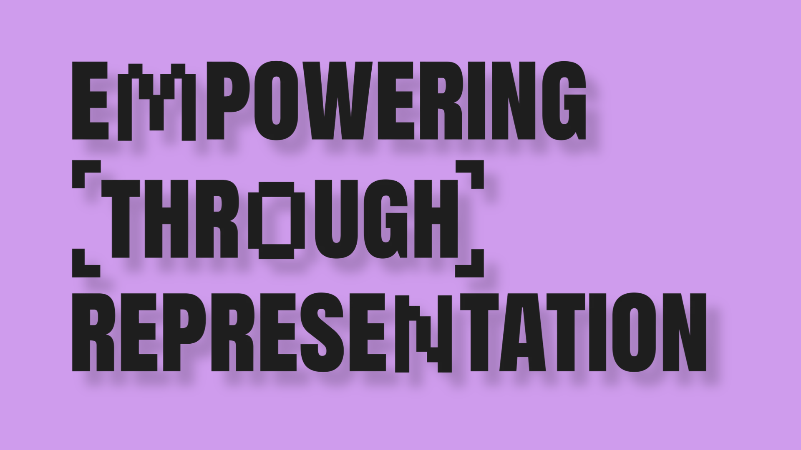

ABOUT THE PROJECT
The Erasmus+-funded project “Empowering Through Representation” aims to foster more inclusive and culturally sensitive representations of social and cultural groups. This toolkit was developed in collaboration with young people and youth organisations, recognising the importance of the voices, experiences and inclusion of the communities being represented.
Through research, co-creation processes and international collaboration, the project is developing a multilingual toolkit and training programme for youth workers, media professionals, social activists, artists and others working in the fields of representation and advocacy.
The project aims to promote more inclusive practices, challenge stereotypes and prejudices, and contribute to more respectful representations of diverse communities across Europe.
The project, co-funded by the European Union’s Erasmus+ programme, is implemented by the Applied Anthropology Organisation “Anthropos” (Lithuania), “Stichting Caat Projects” (The Netherlands), “Izglītības Iniciatīvu Centrs” (Latvia) and “Ecos do Sur” (Spain).

VALUE AND DISTINCTIVENESS OF THE METHODOLOGICAL TOOLKIT
The “Empowering Through Representation” methodological toolkit helps move beyond superficial displays of diversity towards genuine, responsible and collaborative representation.
This toolkit is distinctive because it focuses not only on how different social and cultural groups are represented, but also on who has the power to represent them, who makes the decisions, and whether communities can participate in shaping their own representation.
The toolkit can support individual learning and professional reflection, as well as group training sessions, workshops, or organisational planning. It provides an opportunity to evaluate existing content, identify potential issues in representation and explore practical ways to create a more inclusive environment.
ABOUT THE PROJECT METHODOLOGICAL TOOLKIT
“Empowering Through Representation” is an interactive methodological toolkit developed as part of an international Erasmus+ project, designed to promote inclusive, ethical and responsible representation of social and cultural groups. It helps users better understand how images and narratives of different groups of people are created in museums, educational materials, the media, organisational communication and public discourse, how they influence societal attitudes, and how to avoid stereotypes, stigmatisation and tokenistic inclusion.
The toolkit is intended for museum and cultural institution professionals, educators, educational material developers, journalists, communication specialists, non-governmental organisations, youth workers and representatives of social and cultural groups themselves.
The methodology encourages users to follow the principle of “Nothing About Us Without Us” – recognising communities’ right to tell their own stories, participate in creating content that represents them and contribute to decision-making processes.
The toolkit consists of two main parts: Representation in Institutions (1) and Representation in Communication (2).
The methodological toolkit is available online in five languages:
1. REPRESENTATION IN INSTITUTIONS: museums and educational materials
This part of the toolkit is intended for museum professionals, educators, textbook and other educational material developers, as well as education policy specialists. It explores how cultural and educational institutions shape public understanding of history, identity, cultural diversity and different social groups.
The central idea of this section is that institutions are not neutral providers of knowledge. Through their choices, they determine which stories are told, whose voices are heard and whose experiences remain invisible.
Key topics and tools:
1) The role of institutions and power relations
Explores how museums and educational institutions shape collective memory, legitimise particular historical and social narratives, and influence how different groups of people are perceived in society.
2) Creating inclusive exhibitions
Provides practical recommendations for developing exhibitions in collaboration with the communities being represented. It emphasises that communities should not merely be consulted but should have a genuine influence on decision-making.
This section also raises questions about the responsibility of museums, the representation of LGBTQIA+ people, people with disabilities and other marginalised groups, as well as collection management, restitution and decolonisation.
3) Developing inclusive educational materials
This chapter examines how social and cultural groups are represented in textbooks, learning resources and other educational content.
4) Good practices and examples
Introduces examples from European educational programmes, textbooks and museums focusing on the representation of Roma and other minority groups.
It explores how museums can collaborate with communities and highlights the importance of building direct relationships, mediation, shared responsibility and community participation in the development of exhibitions and educational content.
5) Interactive games
2. REPRESENTATION IN COMMUNICATION: media, self-representation and advocacy
The second part of the toolkit is intended for journalists, communication and advertising professionals, non-governmental organisations, as well as individuals who wish to represent themselves and their communities.
It explores how narratives are constructed through communication, how they influence public attitudes, and how communication can contribute to social change or, conversely, reinforce discrimination and exclusion.
Key topics and tools:
1) The fundamentals of respectful communication
Introduces the principles of narrative creation and the psychology of communication. It compares different narratives and provides tools to help better understand target audiences, their values, motivations and potential barriers.
The section draws on Shalom Schwartz’s Theory of Basic Human Values and explores framing in communication and its impact on social behaviour.
Special attention is given to inclusion in advertising – how to avoid superficial displays of diversity and ensure that representation is meaningful, authentic and backed by genuine commitment.
2) Communication formats and representation choices
This chapter examines how different elements of communication influence the representation of people and communities.
Particular attention is paid to visual ethics: how to portray vulnerable groups, avoid victimisation, and why it is important to present people as active participants in society.
It also addresses the use of images of minors and vulnerable individuals, the importance of consent, and alternative approaches to visual communication.
3) Information sources and ethical storytelling
Provides recommendations for media and communication professionals on ensuring diversity of sources, making space for less-heard voices and avoiding one-sided representations of social groups.
Migration communication is examined separately. Different ways of framing migration are explored – as a crisis, a problem, an economic resource or a natural social process.
4) An active approach to ethical representation
5) Self-representation: How to tell your own story?
This is one of the toolkit’s key sections, dedicated to communities and their members.
It emphasises that people themselves are the experts on their own experiences and have the right to decide how these experiences are presented.
The section also explores the power of storytelling and different forms of self-representation: personal or collective stories, realistic or symbolic narratives, and concrete or abstract creative expressions.
An important message of this chapter is that individuals should decide for themselves whether, when, where and how to share their stories. It also highlights the importance of self-care and respecting personal boundaries.
6) Principles of inclusive representation
Summarises four key principles that should guide the creation of communication materials.
7) Interactive games
Prepared by "Anthropos".
ALL OUR PUBLICATIONS
APPLIED ANTHROPOLOGY ORGANIZATION "ANTHROPOS"
Company Code: 304743335
VAT Code: LT100018477116*
Registration address: Laisvės a. 110, LT-44253, Kaunas, Lithuania
Bank account No.: Luminor LT 20 4010 0510 0419 3055
Email: taikomoji.antropologija@gmail.com
Phone No.: +37065350308 (Ugnė Barbora Starkutė)
* VAT not applied. The small business scheme in Lithuania applies.